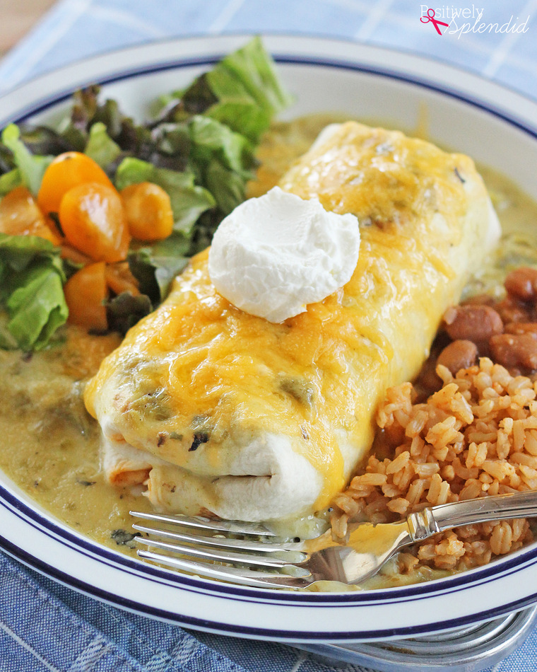

Smothered Burrito

Yummy. My kids love them. Make these smothered burritos for an authentic Mexican cuisane that tastes exquisite!
Ingredients
- 1 pound ground beef
- 2 tablespoons chopped green chiles
- 4 large flour tortillas, or more as needed
- ½ pint sour cream
- 1 (8 ounce) package shredded Cheddar-Monterey Jack cheese blend
Steps
- Preheat oven to 350 degrees F (175 degrees C). Grease a 9x13-inch baking dish.
- Heat a large skillet over medium-high heat. Cook and stir beef, onion, and green chiles in the hot skillet until beef is browned and crumbly, 5 to 7 minutes; drain and discard grease. Add water, chili powder, salt, red pepper flakes, cumin, and garlic powder; bring to a boil. Reduce heat to medium-low and simmer. Stir refried beans into beef mixture and cook until heated through, about 5 minutes.
- Mix cream of mushroom soup and sour cream together in a bowl.
- Fill each tortilla with beef mixture and roll tortilla around filling. Arrange burritos in the prepared baking dish; top with sour cream mixture.
- Bake in the preheated oven for 20 minutes. Cover burritos with Cheddar-Monterey Jack cheese blend. Bake until cheese is melted, about 10 minutes more.